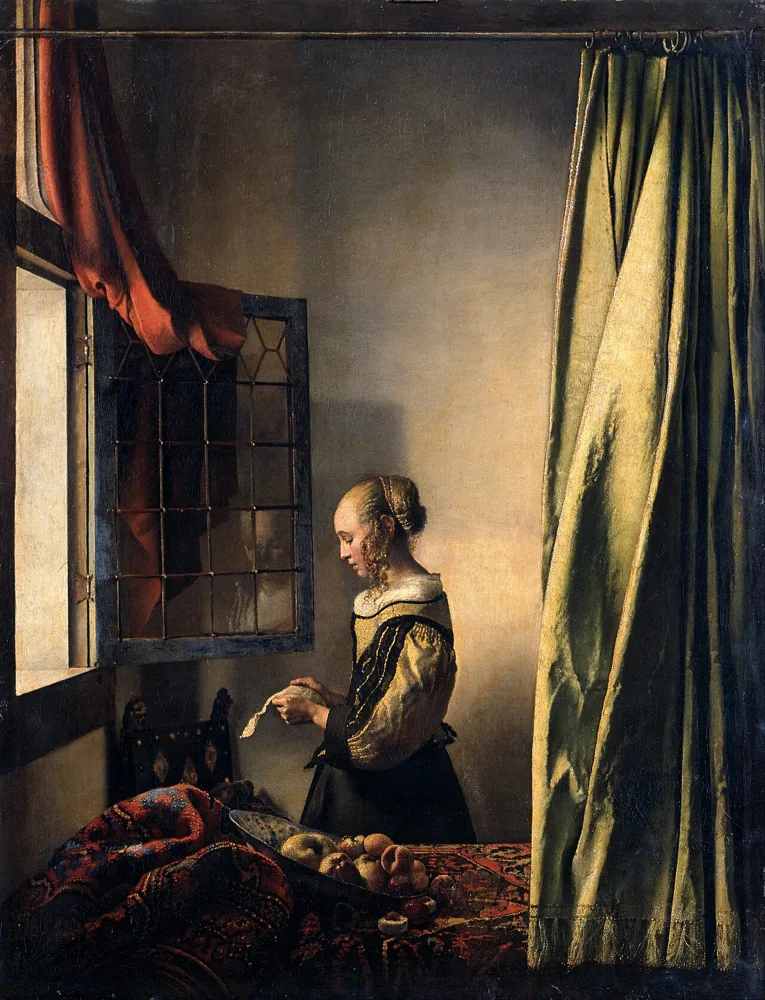

Personagens, situação e espaço. Falas atribuídas e didascálias de ação, pausa, entrada ou saída.
Apoio à escrita
Argumento e guião
Uma história. Um formato. Escolhas que se podem explicar.

1. Desenvolver o argumento
Conta a história por ações: situação inicial, conflito, escolha, viragem e consequência. Um argumento narrativo desenvolve uma história; uma razão sustenta uma posição. Distingue os dois usos da palavra.
2. Escolher o formato
Cabeçalhos de cena: interior/exterior, lugar e momento. Ação no presente, visível ou audível, e diálogos.
Vozes identificadas. Marcas de som, silêncio, música e transição. A ação compreende-se sem imagem.
3. Citar e distinguir
Identifica autor ou entidade, título, data, ligação e página, secção ou minuto. Distingue citação, paráfrase e criação. Não atribuas falas inventadas a autores ou pessoas reais.
4. Rever com outra pessoa
- O colega resume conflito, decisão e consequência sem a tua explicação.
- Aponta uma passagem clara e uma que precisa de revisão.
- Regista duas alterações: antes, depois e razão.